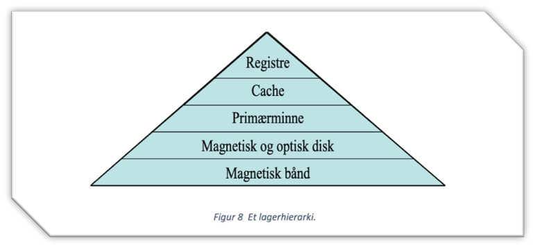

Datamaskinarkitektur - lagerhieraki
Oppgaven

Dette var en gruppearbeidsoppgave, hvor vi skulle spille inn en video om emnet vi fikk utdelt av faglærer.
Oppgaven var å vise og forklare et lagerhieraki som inkluderte moderne lagerteknologier.
Vi skulle også sammenligne de viktigste spesifikasjonene for hver teknologi og vurdere pris for hver teknologi.
Læringsutbytte
- Forståelse av forskjellige lagringsteknologier, inkludert både tradisjonelle og moderne typer.
- Kunnskap om hvordan disse teknologiene brukes i datamaskiner, og hva som skiller dem fra hverandre.
- Evnen til å sammenligne de viktigste spesifikasjonene for hver teknologi, som hastighet, kapasitet og pålitelighet.
- En vurdering av kostnader for de ulike teknologiene, slik at jeg kan gjøre en informert vurdering av hvilken teknologi som passer best for ulike bruksområder
- Arbeide i gruppe. Holde møter, planlegge og utføre oppgaver innen gitte frister.
- Bruk av verktøy som GitLab, PowerPoint, Word og Excel
Resultat
Vi lagde en PowerPoint video, hvor gruppemedlemmene snakket om de ulike lagringsmetodene og sammenlignet de.
Det ble også skrevet en rapport om arbeidet vi utførte.
Oppgaven har ikke blitt vurdert ennå.